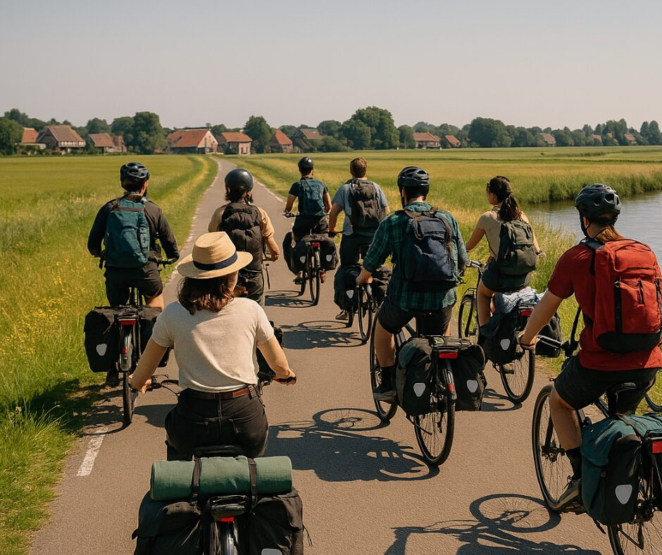
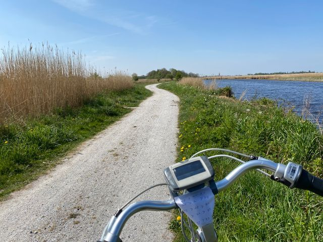
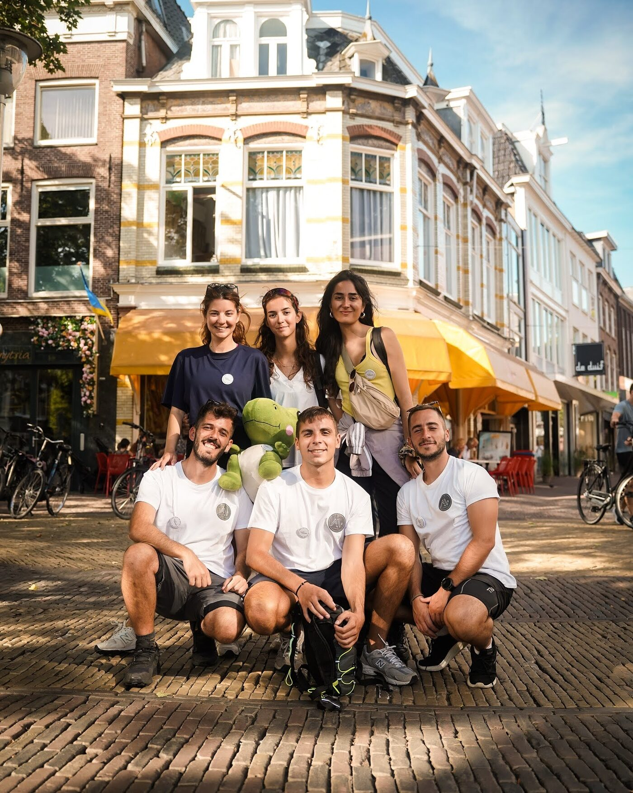
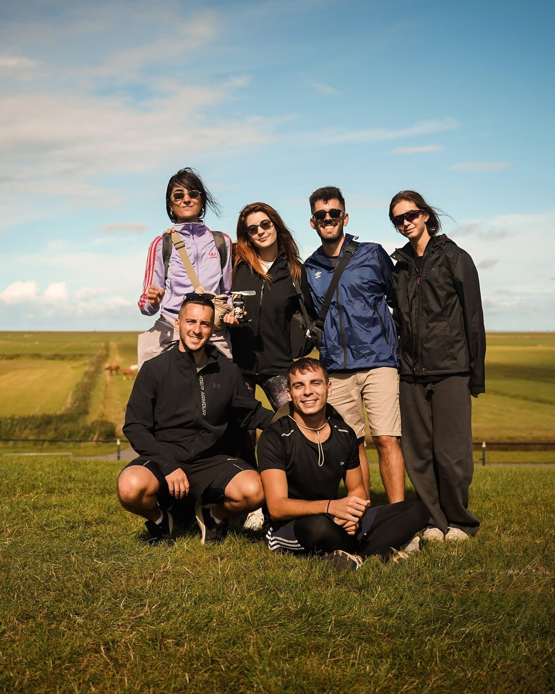
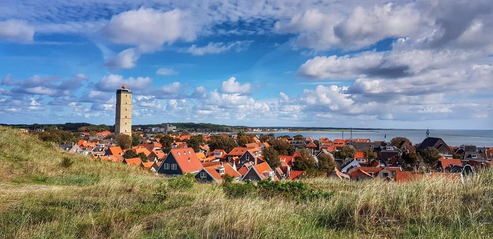
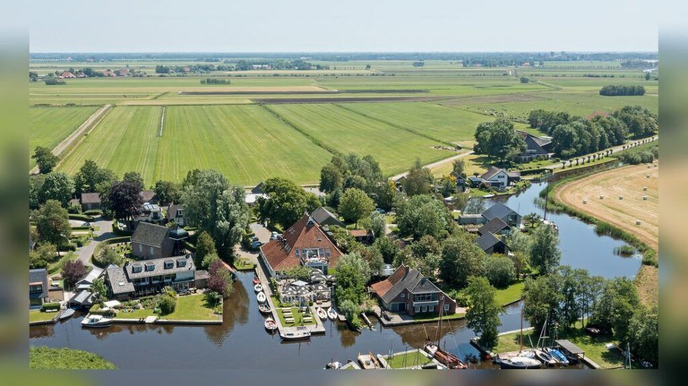

The Dutch Way
Pedal through Friesland, inspire with your lifestyle.
A journey by bike through stories about a healthy lifestyle, The Netherlands.

Pedal through Friesland, inspire with your lifestyle.
We cycled across the northern Dutch landscapes with young people who love healthy living. Some had built a wellness brand, some promoted mental wellbeing, some coached others, and some were simply passionate about living in balance.
Four unique events let them tell their stories, meet local communities and show what healthy living can mean: movement, nutrition, rest and connection.

Young cyclists
People passionate about a healthy lifestyle, physically, mentally and socially: lifestyle coaches, wellness creators, yoga teachers, recipe makers, or people on their own way to feeling fit, strong and well.
A chance to meet like minded people from across Europe, swap experiences, get inspired and recharge, all while moving through nature.
- Aged between 18 and 30
- Fluent English, minimum B2
- Enough stamina for a non stop programme on the go
- Legal resident in Bulgaria, Greece, the Netherlands, Portugal or Spain
Across the whole province
More than 150 km by bike through Friesland with the international Eurolibrary team.
Leeuwarden
Historic canals, bold street art and Frisian pride. Open skies, cosy cafés and a creative, down to earth vibe.

Sint Annaparochie
A quiet village with big stories: poetic landscapes, local pride and the roots of Rembrandt's love story. Calm meets curiosity.

Terschelling
Where sea meets sky: windswept beaches, endless bike paths and a rhythm made of nature, freedom and inspiration.

Goingarijp
Tucked between lakes and meadows, a place to slow down and discover Friesland on the water. A hidden gem for nature and sailing lovers.

What this chapter delivered
What worked
- Four public events held along the whole route through Friesland.
What we learned
- Rain and wind complicated the logistics. The team found alternatives that kept participants safe and the events impactful.
Everything on the road
Tickets, accommodation and meals were covered by the project. Some restrictions applied. This chapter is completed and applications are closed.
See how the Human Library works